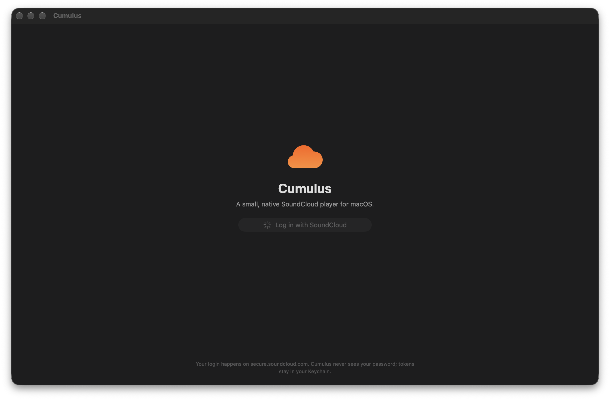

Small. Fast. No web views.
Cumulus is a clean SwiftUI player that streams your SoundCloud — likes, playlists, stream and recommendations — in a real Mac app that fits in under 2 MB.

Everything a player should be
No Electron, no bundled browser — just AVPlayer and SwiftUI doing what they do best.
A fully native app under 2 MB that launches instantly and barely touches your memory.
Sign in through your own browser where you're already logged in. Your password never touches the app.
Recently played, recommendations from your taste, popular tracks in your genres, and new from your follows.
Open any track for its stats, description, top comments — and a full list of related, recommended songs.
Hit ⌘K to search tracks, playlists and people instantly — or jump to any part of the app.
The full Now Playing view shows SoundCloud's signature comments — click a timestamp to jump there.
Save any track to disk and play it back without streaming — handy for the subway or a flight.
Waveform seek, shuffle, repeat, speed, a reorderable queue, autoplay of similar tracks and a sleep timer.
Media keys, Control Center, AirPods controls, and a mini player that lives in your menu bar.
Keyboard first
Up and running in a minute
No App Store, no account on our end. Download, drag, and log in.
Grab Cumulus.dmg and open it. It's a universal build for Apple Silicon and Intel.
Drop Cumulus into your Applications folder. First launch, right-click the app and choose Open once.
Click Log in with SoundCloud, approve in your browser, and you're listening. No key, no setup.
Free, open source, and tiny. Works on macOS 14 and newer.